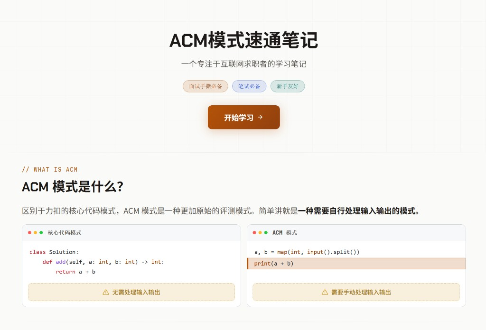
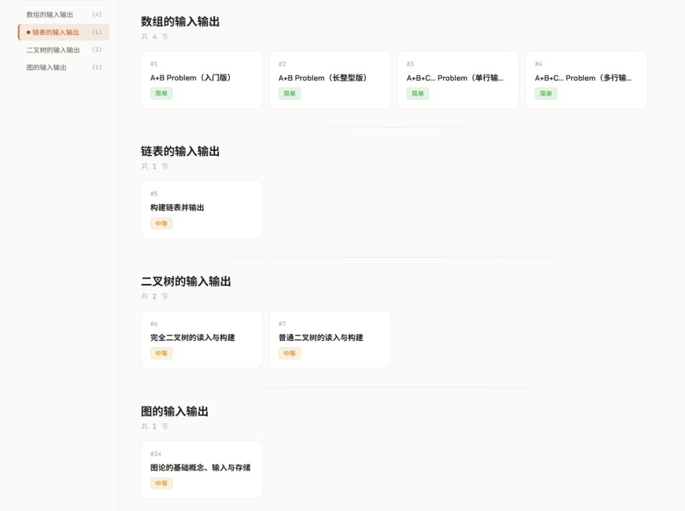
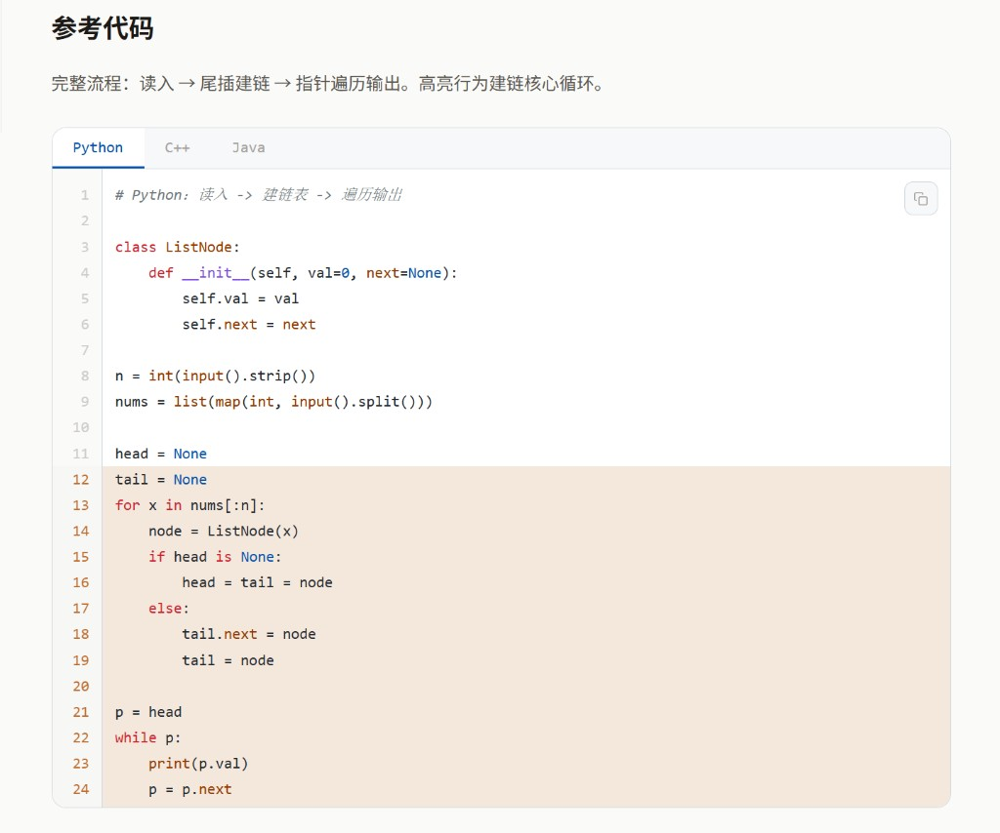
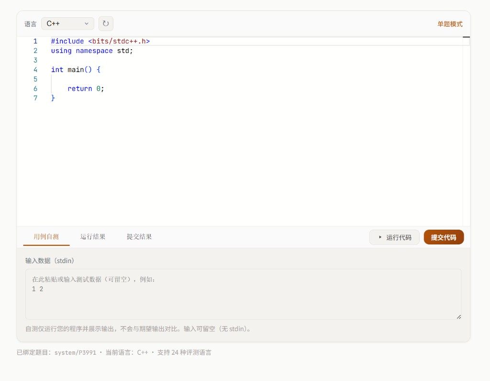
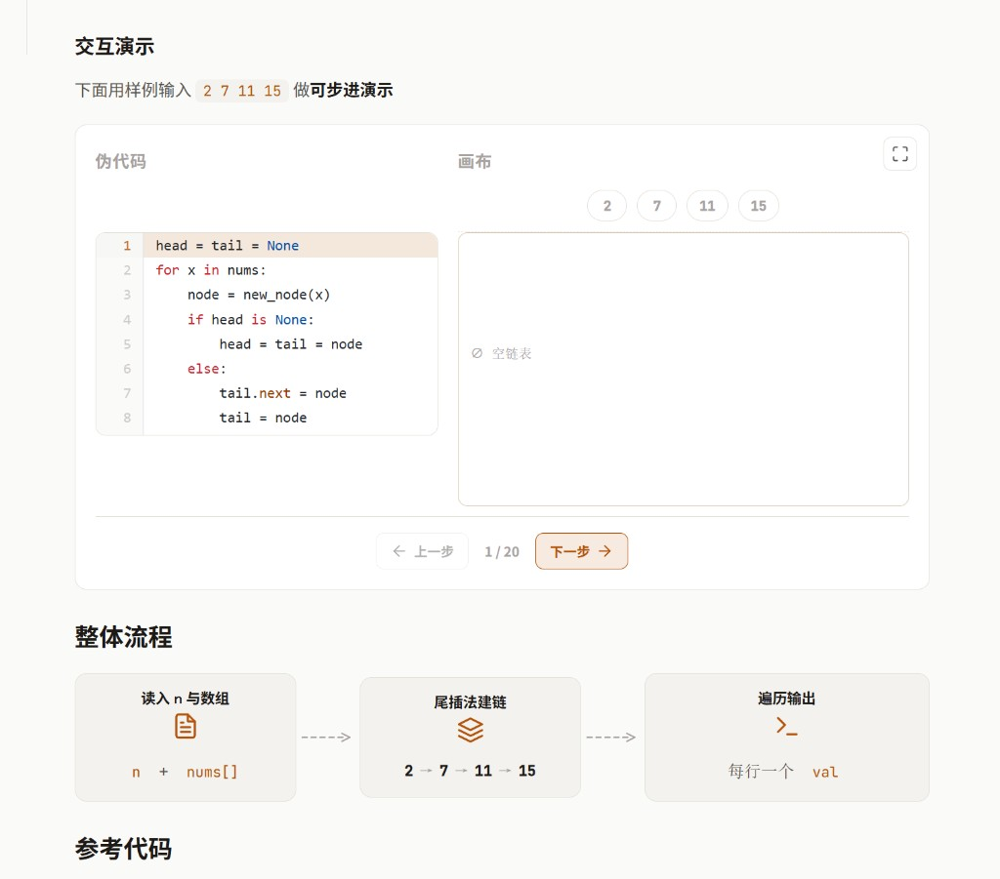
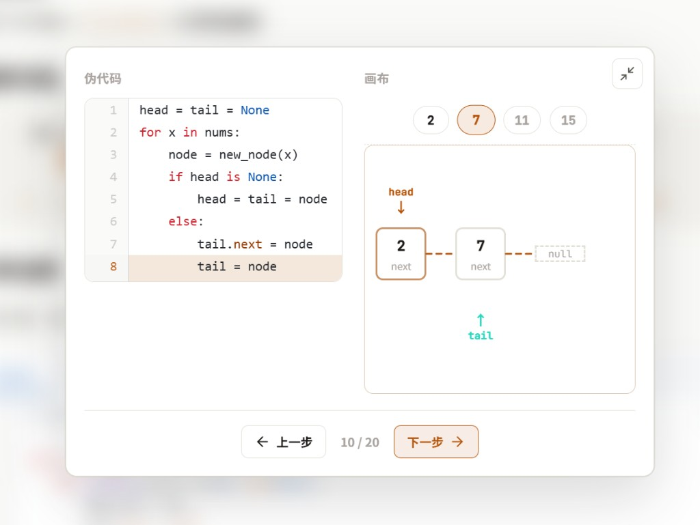
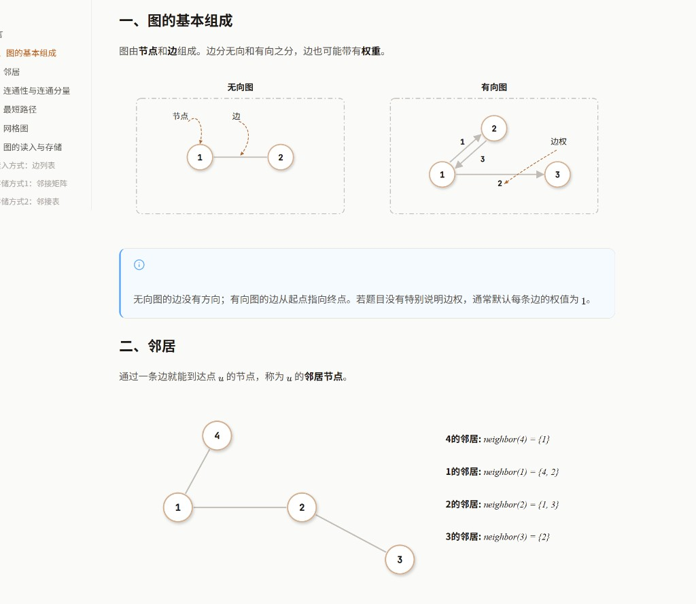

ACM模式免费题库
多组数据、EOF、二叉树/图的读入……笔试现场才暴露
只会函数填空，一到自己读入输出就混乱
所以我想做一套 专门打通力扣 → 大厂笔试面试 gap 的 ACM模式题库
覆盖100%的笔试面试场景
C++ / Python / Java，对照着学
关键步骤可点可拖，看懂再写
真 OJ 输入输出，打开就能交
打开就能练，从第一题开始
免费 · 持续更新中
觉得有帮助？